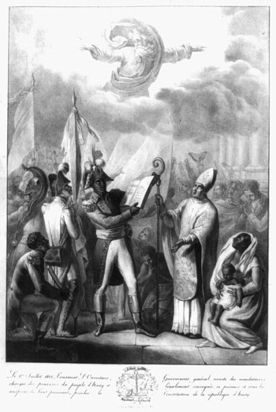

Intro:
The 2010 Earthquakes of Haiti are one of the biggest catastrophes to have ever occurred in human history. Scaling at a magnitude of 7.0, the earthquakes occurring on January 12th struck the people of Haiti devastatingly.
History:
The catastrophic damages done to Haiti were ones caused by its vulnerability, vulnerabilities that run deep within the Nations History. To fully understand how influential Haiti’s past was to the consequences of the earthquake, it must be further investigated.
The history of this Nation dates back all the way to 600 BC, when it was originally inhabited by an Arawak Culture known as the Taino, who had given the region its name of Ayiti (Haiti).
Fast forwarding to the 17th century, when the French had arrived upon the island of Hispaniola and renamed it to “Saint Domingue”. During their colonisation of the area, many west Africans were imported there into slave labour, making the island France’s wealthiest colony of the 18th century. The Haitians, however, revolted against their oppressors in 1791, gained their independence in 1804, and returned the colony to it original Taino name of “Haiti”.

This revolution marked Haiti as the first black independent country and functioned as an inspirational example for African Americans, especially during the 19th century. The United States, however, did not give them recognition as an independent state until 1862, as they feared it as a risk to their booming slave industry at that time. In response to this, several movements led by notable figures such as Martin Robison Delany and James Theodore Holly, would encourage many African Americans to emigrate to Haiti from America.
It would not be until the year of 1915 when Vilbrun Guillaume Sam, Haiti’s Fifth president, would establish a dictatorship, and cause the populace to revolt. In response to this revolution, Guillaume Sam executed 167 prisoners, who were all some of Haiti’s former elites. The citizens, infuriated, had him hung later in Port-Au-Prince, which would later cause Haiti’s national debt to spiral out of control.
As a result of Haiti’s poor economy, in 1915 July 28th the 28th president of the United States Woodrow Wilson, gave the military the green light to invade and occupy Haiti. This occupation would only end in 1934, by the efforts of Stenio Joseph Vincent, the 28th President of Haiti, and under the orders of Franklin D. Roosevelt, the 32nd president of the United States.
The Revolution of 1946, considered to be a staple in Haiti’s History and development, in where Haiti had elected its first ever National Assembly, transitioning the country to an elected Civilian Government.
Haiti would not see the end to its subjugation unfortunately, with the rise of a new dictatorship established by Francois “Papa Doc” Duvalier. Duvalier, the 34th president of Haiti, and an aspiring voodooist, was one of the most cruel and deranged tyrants in Haiti’s history. His regime is considered by many as the most corrupted and autocratic rules of modern time. It was estimated that over 30,000 Haitians were killed by his private guard the Tonton Macoutes. He would only later die by a heart disease on April 21st of 1971, and would be succeeded by his 19 year old son Jean Claude “Baby Doc” Duvalier.
Haiti’s History would only continue to worsen for its people, as in May of 2000 when the President Jean-Bertrand Aristide rose to power once again from a previous term in 1991. Aristide, however, would gain the distain of his people as he has had a history of drug trafficking, turning Haiti into a drug riddled country. He would only later be outed from office through the 2004 coup-d’etat, that were allegedly aided by the United States military.
Notable Figures

Martin Robison Delany (1812 to 1885)
Born as a free man on May 6th of 1812, Charles Town Virginia, His life started out as one of the first black American physicians to have graduated from a university. His life of Activism started off as an abolitionist, aiding in the relocation of escaped slaves, and working in the integrated militia to protect the Black community from racist attacks.
The Right Reverand, James Theodore Holly (1829 to 1911)
Born as a free man on October 3rd, 1829, in Washington DC, James Theodore Holly worked as a Protestant Bishop within Haiti. He was one of the most influential figures in convincing hundreds of African Americans to settle in Haiti, all in pursuit of a better life.

Stenio Joseph Vincent (1874 to 1959)
Born in Port-Au-Prince on February 22nd, 1874, Stenio Vincent was the President of Haiti from 1930 to 1941, and was the leading figure in freeing Haiti from the occupation of the United States.
The Earthquake and What led to it’s Consequences:
Haiti’s past is one filled of conflict, war, and colonisation, all of which has hindered the country’s development, leading to its vulnerability to the Earthquake. Before the According to the United Nations in 2010, Haiti was documented as one of the poorest countries within the western hemisphere, with it’s ranking on the Human Development Index being placed at 145 out of 169.
Statistics:
- Less than 10% of the population had access to clean drinking water
- Haiti’s Exports were only making 10% of their GDP
- The agricultural sector was at a rapid decline
The high amounts of poverty in Haiti were no coincidences, these were all results of the country’s history. From it’s past of colonisation, and brutal dictatorships, these events can be tied as the root causes of the nation’s stagnated development. With how much their country went through, the lack of stable leadership, and the multiple invasions from foreign states, prevented the country from gaining any advancements within their economy and wealth.
This lack of economical stability led to further consequences, including the impact of Haiti’s infrastructure. One of the biggest factors to the extensive collapsing of buildings can be connected to the Country’s method of construction. Due to their limited resources and funding, Haiti lacked enough steel and materials to properly build their foundations. With even the wealthiest of Haiti’s buildings were formed only of concrete, that couldn’t withstand the motions of an earthquake. Because even the roofs of said houses were made up of the same materials, majority of them ended up collapsing in on themselves, increasing the damages tenfold.
Haiti’s geography was also a key factor to its infrastructure’s instability, as most of the land was comprised of hills and slopes.
In addition, according to research done by the United Nations University’s Institution for Environment and Human Security, Haiti’s Ministry of Environment only receives approximately 2% in the government’s total funding, preventing the nation from further preparing and investing itself into defending against natural disasters etc.
Because of all these historical, economic, and physical factors, Haiti was left in an outstandingly vulnerable state.
The 2010 Haiti Earthquake struck the Centre of Haiti’s Capital, Port-Au-Prince, sending shockwaves throughout all the Nation. The total amount of damages done to the populace were as follows:
- Over 220,000 Fatalities
- Over 300,000 Injuries
- Over 293,000 Residencies Destroyed
- Over 1.5 million displacements
- Over 8 to 13 billion dollars in total damages
Overall, Haiti’s history is filled with countries and foreign states seizing their freedoms and opportunities all in the pursuit of wealth and power. It is because of this history of power imbalance between the wealthy and the powerless, that Haiti has struggled to keep itself sustained.
References
Important Information on the earthquake: Haiti earthquake by Caitlyn Eberle
Information on the vulnerabilities: Vulnerable infrastructure
Events leading to the earthquake: The Causes and Effects of the 2010 Haiti Earthquake by Vincent M Basile, April 23, 2021
Stenio Joseph Vincent Biography: Chefs d’Etat haïtiens Sténio Vincent (1930-1941)
Martin Robison Delany Biography: Martin Robison Delany, August 25th, 2020
James Theodore Holly Biography: The Right Reverend James Theodore Holly, 1829-1911
University of Kansas, Institute of Haitian Studies, Haiti: A Brief History of a Complex Nation: HAITI: A Brief History of a Complex Nation
Wei-Haas, M. Here’s what makes earthquakes so devastating in Haiti: Here’s what makes earthquakes so devastating in Haiti by Maya Wei-Haas, August 14, 2021
Diaz, J. Why Earthquakes in Haiti Are So Catastrophic, August 16th, 2021: Why Earthquakes In Haiti Are So Catastrophic by Jaclyn Diaz, August 16th, 2021